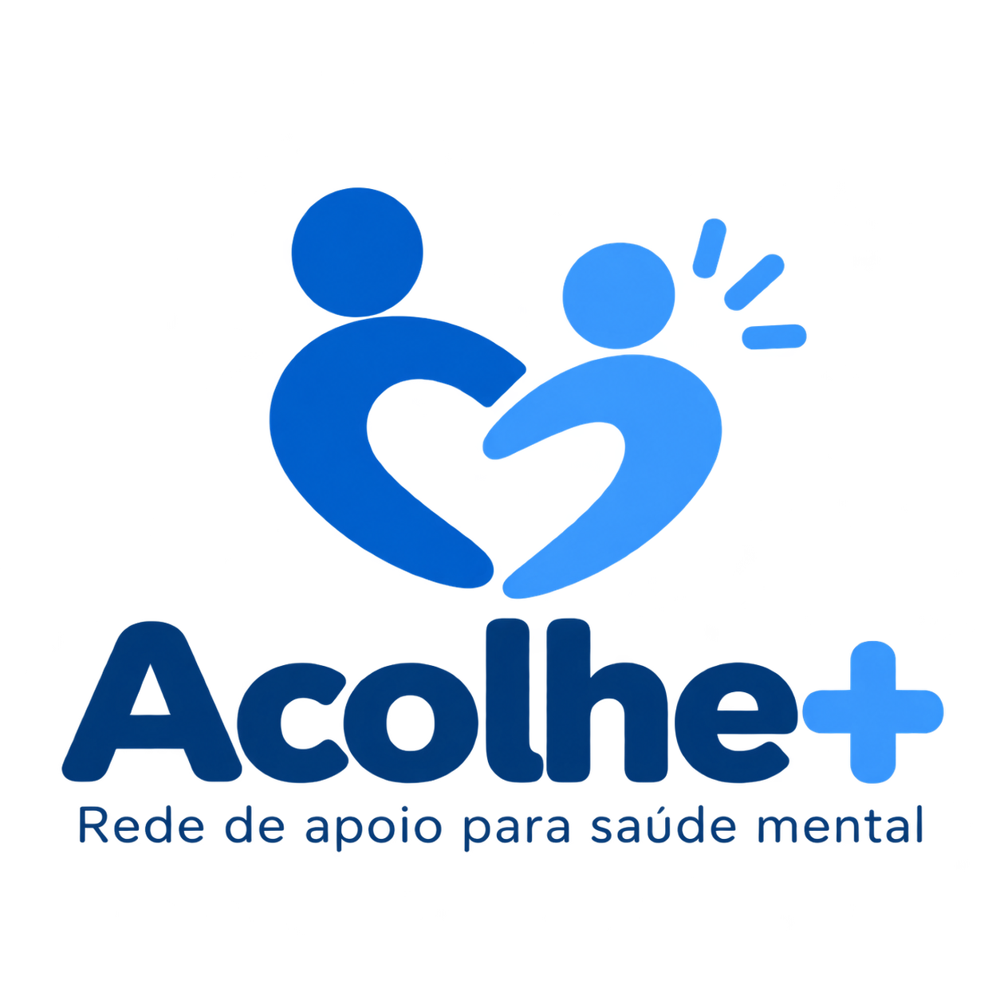

Você não precisa enfrentar tudo sozinho.
Encontre apoio, orientação e pessoas dispostas a ajudar. O Acolhe+ conecta você a profissionais voluntários e grupos de apoio.

UM COMEÇO POSSIVEL
Sobre o Acolhe +
O Acolhe+ aproxima pessoas que buscam apoio emocional de voluntários disponíveis para escutar, orientar e compartilhar caminhos. Aqui, pedir ajuda é reconhecido como um gesto de coragem.
Números demonstrativos para este projeto acadêmico.
120+
Voluntários cadastrados
35
Grupos de apoio ativos
1.500
Conversas iniciadas
100%
Sigilo e respeito
EM TRÊS PASSOS
Como funciona
Uma jornada simples para você encontrar uma conversa, uma orientação ou um grupo que faça sentido.
Encontre apoio
Pesquise profissionais e grupos de apoio disponíveis.
Escolha uma opção
Veja informações, especialidades e horários disponíveis.
Receba acolhimento
Entre em contato e encontre o apoio que procura.
VOCÊ ESCOLHE O SEU RITMO
Encontre o apoio ideal para você
Psicólogos
Profissionais voluntários disponíveis para oferecer orientação e acolhimento.
Ver opções →CONTEÚDOS PARA VOCÊ
Artigos e informação
Como cuidar da saúde mental no dia a dia
Pequenas práticas podem ajudar a criar uma rotina mais gentil com você.
Ler artigoEntendendo a ansiedade
Conhecer o que sentimos pode ser o começo para buscar suporte.
Ler artigoA importância de conversar sobre o que sentimos
Uma conversa segura pode aliviar, aproximar e abrir novas possibilidades.
Ler artigoDÚVIDAS COMUNS
Você pode começar por aqui
Reunimos respostas simples para ajudar você a entender a proposta do Acolhe+.
Ver todas as perguntasPrecisa de ajuda imediata?
Esta plataforma não substitui serviços de emergência. Em situações de risco imediato, procure um serviço de emergência ou entre em contato com os serviços oficiais da sua região.
Serviços de emergênciaESTAMOS POR PERTO
Fale com a gente
Dúvidas, sugestões ou vontade de ser voluntário? Entre em contato conosco.